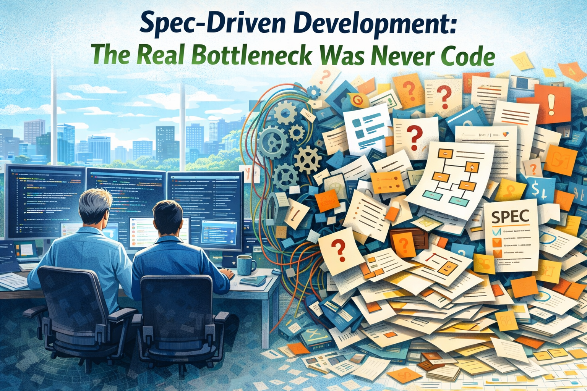

Llevo veinte años desarrollando software. He programado aplicaciones de escritorio desde VB6 a WinForms y WPF, montado microservicios sobre Azure y AWS, lanzado apps de React Native desde cero, construido webs completas, migrado monolitos legacy, diseñado arquitecturas event-driven y depurado producción a las tres de la mañana. He escrito muchísimo código.
Y ahora, por primera vez en mi carrera, escribir código ya no es la parte difícil.
Los agentes de IA pueden levantar una feature full-stack en minutos. Copilot, Cursor, Codex, Claude, Antigravity, OpenCode: elige herramienta. La capacidad bruta de producir código se ha disparado. El coste de desarrollo cae rápido. Mantener software empieza a ser más barato. Lo que antes ocupaba un sprint ahora cabe en una tarde.
Pero hay una verdad incómoda con la que me encuentro una y otra vez: el cuello de botella ahora está mucho antes, en la definición. Ya no se trata de construir rápido. Se trata de definir con precisión qué merece la pena construir.
El bug más caro de 2026 es una especificación ambigua.
La Especificación Es el Producto
Durante años traté las specs como un trámite previo al código. Unas cuantas user stories, criterios de aceptación en formato checklist y, si insistía producto, quizá un diagrama. La parte seria del pensamiento sucedía dentro del IDE.
Ese modelo ya no sirve.
Cuando un agente de IA puede implementar una especificación bien escrita a la primera, y una mala especificación genera basura que cuesta más corregir que empezar desde cero, la calidad del documento deja de ser secundaria. Se convierte en el factor más importante de tu pipeline de entrega.
El spec-driven development no es una metodología nueva. Es asumir que, en un entorno acelerado por IA, la especificación es el producto. El código pasa a ser una consecuencia de esa definición. Si la spec está mal, el agente construirá rápido la solución equivocada.
Lo he vivido en primera persona. He dado requisitos vagos a Codex y he recibido código impecable desde el punto de vista técnico que resolvía el problema incorrecto. Y también he preparado specs claras, bien estructuradas, y he visto a los agentes entregar implementaciones casi listas para producción en el primer intento.
La diferencia no era el modelo. Era la entrada.
Las Especificaciones Siempre Fueron el Cuello de Botella, Solo Que No Se Veía
Antes de la IA, el coste de una mala especificación quedaba oculto. Los ingenieros absorbíamos la ambigüedad. Leíamos entre líneas, hacíamos preguntas por Slack, asumíamos cosas razonables y llegábamos iterando a una solución aceptable. La traducción entre una idea borrosa y software útil ocurría dentro del equipo.

Esa capa humana escondía el problema real: a la mayoría de organizaciones se les da mal definir con claridad lo que quieren.
Ahora que los agentes ejecutan a velocidad de máquina, esa capa desaparece. La ambigüedad ya no se absorbe: se amplifica. Una spec con tres interpretaciones posibles producirá tres implementaciones distintas en tres sesiones de agente, y luego gastarás más tiempo conciliándolas que si hubieras especificado bien desde el principio.
El cuello de botella de la especificación siempre estuvo ahí. La IA simplemente lo ha dejado al descubierto.
Cómo Es una Buena Spec en 2026
Una spec útil para desarrollo asistido por IA no es un Word de cuarenta páginas. Tiene estructura, contexto y un formato que tanto humanos como máquinas pueden recorrer sin fricción. Lo que mejor me está funcionando es esto:
- Límites de alcance bien definidos — Qué entra y qué queda explícitamente fuera. Los agentes no infieren bien dónde termina el trabajo.
- Contratos de entrada y salida — Ejemplos concretos. Si el agente entiende qué entra y qué debe salir, puede resolver el medio con bastante solvencia.
- Restricciones de comportamiento — Casos límite, errores esperables, requisitos de rendimiento. No "debe ser rápido", sino "latencia P95 por debajo de 200 ms en este endpoint".
- Contexto arquitectónico — Dónde encaja esta pieza en el sistema, con qué servicios habla y qué patrones debe seguir. Los agentes trabajan mucho mejor cuando disponen de contexto de proyecto, convenciones del repo e instrucciones claras.
- Criterios de aceptación expresados como tests — Escribe los escenarios de validación desde el principio. Así agente y revisor comparten el mismo contrato.
Yo guardo las specs en markdown dentro del repo. Viven junto al código. Están versionadas. El agente las lee. El revisor también. Hay una única fuente de verdad.
Estrategias para Reducir el Cuello de Botella de la Especificación
Detectar el cuello de botella es solo el primer paso. Lo difícil es reducirlo. Estas son algunas prácticas que me están funcionando, tanto en proyectos propios como en conversaciones con otros equipos:
1. Flujos Spec-First con Ayuda de IA
Usa un modelo fuerte de razonamiento para ayudarte a escribir la spec. Expón el problema en lenguaje natural y deja que el modelo te devuelva preguntas, casos borde que no habías contemplado y un borrador estructurado. Luego tú revisas, corriges y aprietas. Después el propio modelo implementa a partir de esa versión ya afinada.
Ese bucle, problema -> spec asistida por IA -> revisión humana -> implementación por IA -> validación humana, es el flujo más productivo que he encontrado.
2. Especificaciones Vivas
Las specs no deberían ser documentos de usar y tirar. Evolucionan. El problema es que en muchas organizaciones se pudren en cuanto empieza el desarrollo. Nadie las toca de nuevo.
Los equipos que mejor se están adaptando tratan las specs como código: versionadas, revisadas por PR y mantenidas en sincronía con la implementación. Algunos incluso generan diffs de especificación a partir de cambios en el código mediante IA, para que la documentación se mantenga actualizada sin depender tanto del trabajo manual.
3. Plantillas y Convenciones de Especificación
Estandariza el formato. Si cada feature sigue la misma estructura, contexto, alcance, contratos, restricciones y criterios de aceptación, reduces el coste mental de redactarlas. Y también facilitas que los agentes las entiendan y las sigan de forma consistente.
A nivel de repo, eso implica tener un directorio specs/ con una plantilla común y convertir la revisión de la spec en un paso formal dentro del proceso de PR.
4. Descomposición Como Disciplina
Las specs grandes y ambiguas generan implementaciones grandes y ambiguas. Los mejores resultados llegan cuando divides el trabajo en unidades pequeñas, bien acotadas y que un agente pueda resolver en una sola pasada.
No es algo nuevo. Es la misma capacidad de descomponer que siempre hemos necesitado en ingeniería. La diferencia es que ahora el incentivo es mucho mayor. Una spec bien descompuesta te permite paralelizar trabajo con agentes en varias ramas y fusionarlo con bastante más confianza.
5. Propiedad Compartida de las Specs
Las specs no deberían vivir solo en producto ni solo en ingeniería. Las mejores que he visto nacen de una colaboración estrecha: producto define el qué y el porqué, ingeniería aterriza el cómo y las restricciones, y ambos revisan juntos antes de que ningún agente toque el código.
Algunas organizaciones ya están creando perfiles nuevos, llámalo spec engineer o requirements architect: alguien cuyo trabajo principal es traducir intención de negocio a especificaciones listas para agentes. Creo que veremos ese rol cada vez más.
Medirlo Todo: el Nuevo Mandato del Ingeniero
Aquí quiero ser directo: si no estás midiendo, estás adivinando. Y adivinar a velocidad de máquina sale carísimo.
Cuando el coste de desarrollar y mantener software cae un orden de magnitud, la ventaja competitiva se desplaza hacia la velocidad de iteración y la calidad de las decisiones. Ambas dependen de tener datos.
Nuestro trabajo ya no consiste solo en entregar features. También consiste en proporcionar herramientas y señales para que producto, diseño y liderazgo puedan decidir mejor y empujar el producto hacia un resultado útil.
¿Qué merece la pena medir?
- Tiempo de spec a producción — Cuánto tardas desde que la especificación se aprueba hasta que está en prod. Ahí es donde aparecen los cuellos de botella reales.
- Tasa de éxito del agente — Qué porcentaje de implementaciones generadas por agentes supera la revisión a la primera. Es un termómetro bastante honesto de la calidad de la spec.
- Ratio de retrabajo — Cuánto tiempo se va en corregir la salida del agente frente a construir funcionalidad nueva. Si el retrabajo sube, suele haber specs flojas o contexto insuficiente.
- Métricas de adopción — Si el usuario no usa lo que construiste, probablemente la spec resolvía el problema equivocado.
- Origen de los defectos — ¿Los bugs nacen de ambigüedad en la spec, errores del agente o problemas de integración? Cada origen exige una corrección distinta.
Los equipos que van a destacar en este escenario son los que construyan bucles de feedback muy cortos: lanzar rápido, medir enseguida, aprender y volver a iterar. El coste de cada iteración cae tanto que el verdadero desperdicio pasa a ser no iterar lo suficiente.
Cómo se Están Adaptando las Organizaciones Modernas
Por lo que veo en la industria y en conversaciones con otros ingenieros, muchas empresas ya se están reordenando alrededor de esta realidad:
- Equipos más pequeños y con más palanca — En lugar de squads de ocho ingenieros, equipos de dos o tres personas apoyadas por agentes ya pueden producir algo equivalente. El perfil de contratación se mueve de "más manos" a "mejor criterio".
- La revisión de la spec como puerta de entrada — Cada vez más equipos exigen revisar la especificación antes de empezar a implementar. Es la nueva code review y, en muchos casos, la más importante.
- Cultura observability-first — Se invierte más en monitorización, analítica e infra de experimentación. Si puedes lanzar diez veces más rápido, también necesitas medir diez veces más rápido.
- Especificación continua — En lugar de grandes documentos cerrados al principio, se redactan specs incrementales, ligadas al descubrimiento y al feedback real de usuarios. La spec pasa a ser un artefacto vivo.
- QA aumentada por IA — La generación de tests, regresión visual y validación de comportamiento se delega cada vez más en agentes. Pero los criterios siguen naciendo de una especificación humana.
- Bases de conocimiento como infraestructura — Documentación interna, ADR, contratos de API y mapas del sistema dejan de ser algo deseable para convertirse en el contexto que hace eficaces a los agentes. Se invierte en conocimiento estructurado como antes se invertía en CI/CD.
La Evolución del Rol del Ingeniero
Voy a ser honesto: parte de todo esto me costó asumirlo. Después de veinte años siendo valorado por mi capacidad para escribir soluciones elegantes, aceptar que una IA puede producir código equivalente en segundos tiene algo de golpe de realidad.
Pero cuanto más trabajo así, más claro veo que la habilidad no pierde valor, simplemente cambia de sitio. La comprensión profunda de sistemas, trade-offs y arquitectura que me llevó dos décadas construir es justo lo que hace buena una especificación. Es lo que me permite detectar cuándo la salida del agente está sutilmente mal. Es lo que me ayuda a diseñar un framework de medición que capture lo importante de verdad.
El rol evoluciona de "persona que escribe el código" a "persona que se asegura de que se construye lo correcto, bien construido". Eso incluye:
- Redactar y revisar especificaciones
- Diseñar la arquitectura y sus restricciones
- Validar la salida de los agentes contra la spec
- Montar medición, observabilidad e instrumentos de feedback
- Seguir el progreso y mantener coherencia entre varios frentes paralelos
- Tomar decisiones de trade-off que los agentes no saben tomar
Es otra forma de ejercer la ingeniería. Pero sigue siendo ingeniería.
Mirando Hacia Delante
La industria está cambiando muy rápido. El coste de desarrollo se desploma. La barrera para crear software es menor que nunca. Y eso significa que la diferencia ya no es si puedes construirlo, sino si deberías construirlo y si realmente construiste lo correcto.
El spec-driven development es la manera de responder a esas preguntas. No es la parte glamurosa de la revolución de la IA ni lo que suele acaparar titulares. Pero ahí es donde hoy vive la disciplina de ingeniería de verdad.
Si eres ingeniero y estás atravesando esta transición, mi consejo es simple: invierte en tu capacidad para especificar, medir y validar. El código tenderá a escribirse solo. Lo difícil es saber qué hay que escribir y demostrar que funcionó.
Nos leemos en la próxima historia.